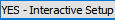
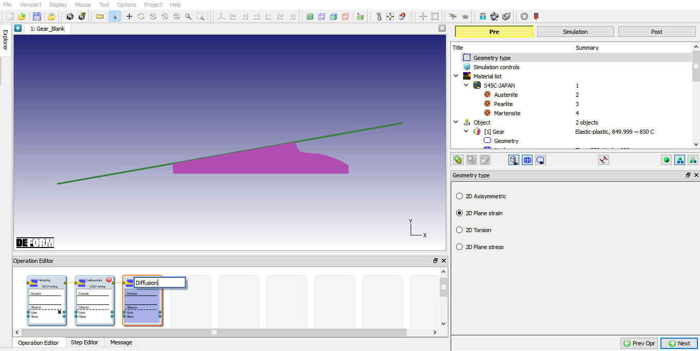
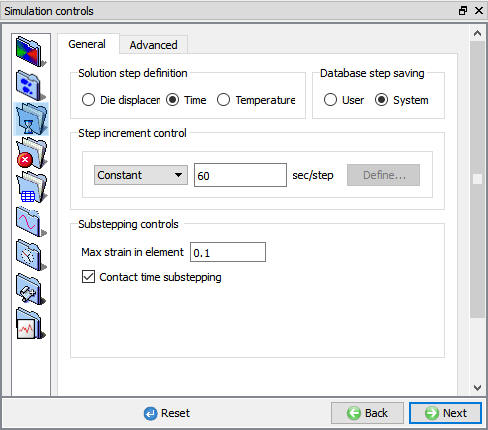
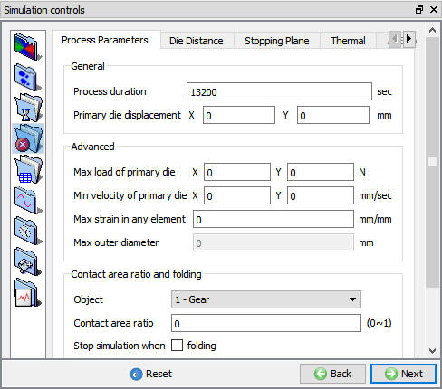
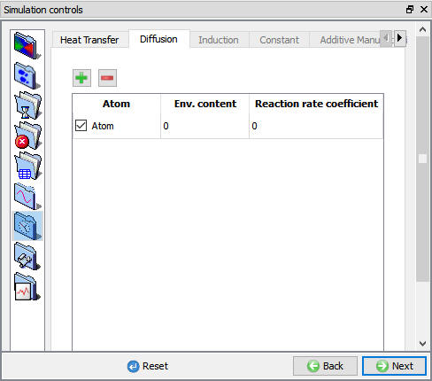
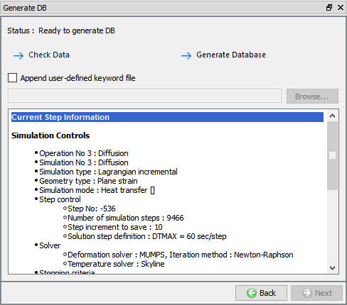
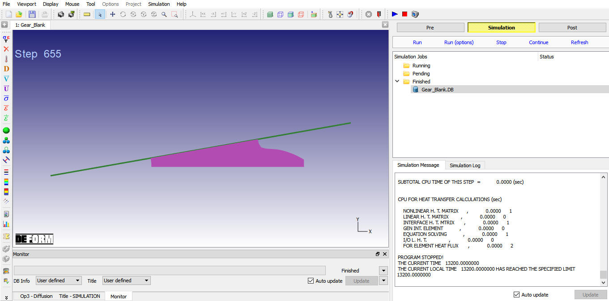
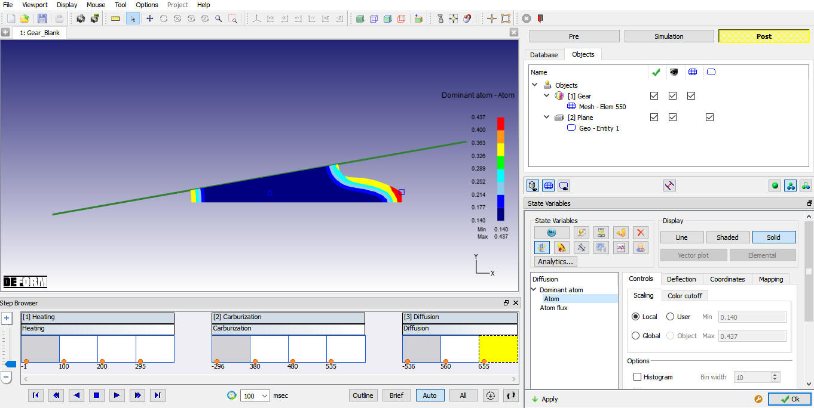

3.3. Setting Simulation Controls
3.6. Post-Processing the Results
The DEFORM GUI MAIN window should already be open. With the Gear_Blank.moproj file highlighted in the file list, click on  as shown in
Fig. 2DHTML2.1. Integrated Manufacturing Proc. will open.
as shown in
Fig. 2DHTML2.1. Integrated Manufacturing Proc. will open.
Add 2D Forming operation from Operations list in Explorer. Operation can be added by clicking on  button next to 2D Forming operation or user can
also add the operation by dragging and dropping the operation into Operation Editor region.
button next to 2D Forming operation or user can
also add the operation by dragging and dropping the operation into Operation Editor region.
Select 3rd operation from Operation editor, Setup type popup will appear, click on

button. Select 3rd operation in Operation editor, double mouse click on it and change the name to "Diffusion" and press enter from keyboard. (See Fig. 2DHTML3.1.) Click on

Changing operation name from Operation Editor
Select Step Increment tab, Set Constant Time Increment to 60 sec as shown in Fig. 2DHTML3.2.

Step Increment tab in expert mode
Select Stopping Controls tab, and set Process Duration to 13200 seconds. as shown in Fig. 2DHTML3.3.

Stopping Controls tab in Expert Mode
Click on the Process Conditions tab in the Simulations Controls. Select Diffusion tab, Set the value of
the reaction rate coefficient to 0 mm/s and the environmental atom content should be changed to 0 % atom as shown in Fig. 2DHTML3.4. Click on  until Generate DB page.
until Generate DB page.

Process Conditions tab in expert mode
In Generate DB page. Click the button to have the program check to see if anything was missed in the problem setup. During the checking process,
messages in the red color signify data that needs to be fixed before a simulation can be run (such as when you forget to define any material data).If there are no errors shown, then the database can be generated.
button to have the program check to see if anything was missed in the problem setup. During the checking process,
messages in the red color signify data that needs to be fixed before a simulation can be run (such as when you forget to define any material data).If there are no errors shown, then the database can be generated.
Click on  button to generate the database (see Fig. 2DHTML3.5.).
When the program is done writing the database, switch to
button to generate the database (see Fig. 2DHTML3.5.).
When the program is done writing the database, switch to  tab to run simulation.
tab to run simulation.

Generate Database window
Click on the  action label to open the Run Options dialog. Use the default Continue Run option to select “Continue from the last step” option and then select the Simulation mode as Interactive and click on
action label to open the Run Options dialog. Use the default Continue Run option to select “Continue from the last step” option and then select the Simulation mode as Interactive and click on  button
to run the simulation. As we click on
button
to run the simulation. As we click on  button simulation starts.
button simulation starts.
When the simulation is finished without any issues, the following message will be added to the end of the Message file as shown in Fig. 2DHTML3.6.

Simulation Message tab
After simulation has been completed, switch to  tab to view results, MO post processor will open.
tab to view results, MO post processor will open.
The key state variable in this simulation is the Dominant Atom. Go to the last step of the database. Click the State Variables  button to open the state
variable dialog. Select the variable Dominant Atom under Diffusion and plot the variable as a shaded contour. Click on (see Fig. 2DHTML3.7.).
The user should see the variable in the similar state as in the end of the Carburization operation. In this simulation, the total amount of carbon holds constant but diffuses throughout the geartooth.
button to open the state
variable dialog. Select the variable Dominant Atom under Diffusion and plot the variable as a shaded contour. Click on (see Fig. 2DHTML3.7.).
The user should see the variable in the similar state as in the end of the Carburization operation. In this simulation, the total amount of carbon holds constant but diffuses throughout the geartooth.

Diffusion Dominant atom plot
After completion of Post processing, Save the Project and close the MO wizard by clicking Quit  button or selecting Quit option under File menu. If User wants to continue the setup, can switch
to pre mode directly and continue the setup by adding operation.
button or selecting Quit option under File menu. If User wants to continue the setup, can switch
to pre mode directly and continue the setup by adding operation.
Related Topics: